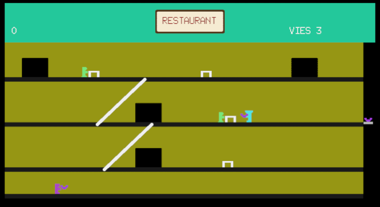
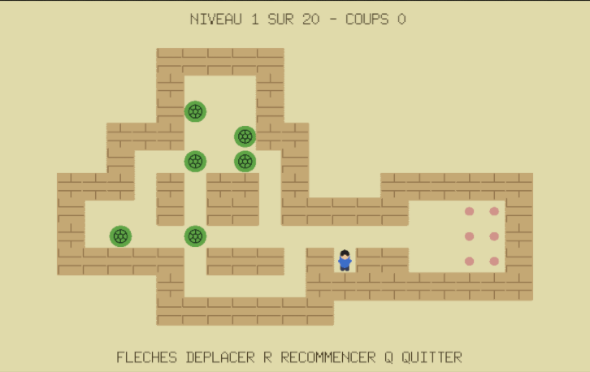
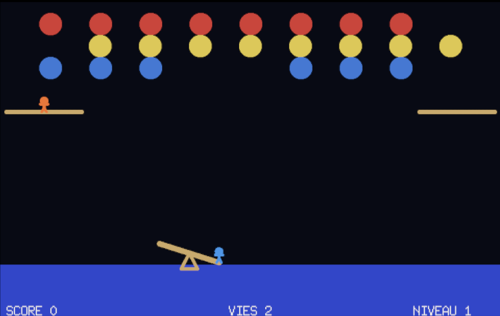

Prise en main
Les premières minutes avec GoLogo : le REPL, la tortue, l'éditeur
Lancer GoLogo
Au démarrage, GoLogo occupe tout l'écran et affiche l'invite ? :
l'écran est en mode texte, c'est là que vous tapez vos instructions. La zone
graphique n'apparaît pas encore.
Pour la faire apparaître, tapez MT (Montre Tortue) : le champ
graphique bleu s'affiche, avec la tortue en son centre, une petite flèche pointée
vers le haut, prête à partir. (La zone graphique apparaît aussi d'elle-même dès la
première commande de tracé, comme AVANCE.)
-w sur la ligne de commande. Pour quitter GoLogo,
tapez Ctrl+Q ou la commande QUITTE.
Le REPL : tapez une instruction, obtenez un résultat
GoLogo fonctionne en dialogue direct. Vous tapez une instruction, vous appuyez sur Entrée, GoLogo l'exécute immédiatement. C'est ce qu'on appelle le REPL (Read–Eval–Print Loop, ou boucle de lecture-évaluation-affichage).
Essayez :
? AVANCE 100La tortue avance de 100 pas et trace un trait derrière elle. Essayez maintenant de la faire tourner :
? TD 90Elle a pivoté de 90 degrés vers la droite. Enchaînez quelques instructions pour tracer un carré à la main :
? AV 80
? TD 90
? AV 80
? TD 90
? AV 80
? TD 90
? AV 80
? TD 90Bon, c'est un peu long. Logo a une bien meilleure façon de faire ça.
REPETE : la première structure de contrôle
Quand on répète la même chose plusieurs fois, on utilise REPETE
suivi du nombre de répétitions, puis des instructions entre crochets :
? REPETE 4 [ AV 80 TD 90 ]Un carré en une ligne. Voilà l'idée centrale de Logo : exprimer clairement ce qu'on veut faire, sans répétition inutile.
Remettons l'écran à zéro avant de continuer :
? VEVE (Vide l'Écran) remet la tortue au centre et efface tous les
tracés. C'est une commande qu'on utilise souvent.
Les premières commandes de la tortue
La tortue comprend quatre instructions de base pour se déplacer :
| Instruction | Forme courte | Effet |
|---|---|---|
AVANCE n | AV n | Avance de n pas |
RECULE n | RE n | Recule de n pas |
TOURNEDROITE n | TD n | Tourne à droite de n degrés |
TOURNEGAUCHE n | TG n | Tourne à gauche de n degrés |
Avec seulement ces quatre-là, on peut déjà faire beaucoup. Un triangle équilatéral, par exemple : trois côtés, trois virages de 120 degrés.
? REPETE 3 [ AV 100 TD 120 ]Un hexagone à six côtés, six virages de 60 degrés :
? REPETE 6 [ AV 60 TD 60 ]En général, pour un polygone régulier à N côtés, l'angle de virage vaut 360 ÷ N. Logo sait calculer :
? REPETE 8 [ AV 50 TD 360 / 8 ]Le crayon
La tortue peut déplacer son crayon pour ne pas laisser de trace :
? LC ; Lève le Crayon
? AV 50 ; se déplace sans tracer
? BC ; Baisse le Crayon
? AV 50 ; trace de nouveauEt on peut changer la couleur du trait :
? FCC 1 ; rouge
? AV 60
? FCC 2 ; vert
? AV 60Les codes de couleur vont de 0 (noir) à 15 (orange). Voir la palette complète.
; débute un commentaire : tout ce qui suit
sur la même ligne est ignoré par GoLogo. Le dièse # joue le même
rôle (GoLogo accepte les deux, par souci de compatibilité avec un maximum de Logo
existants). Pratique pour annoter son code.
Définir sa propre commande avec POUR
Pour l'instant, on tape tout directement dans le REPL. Mais si on veut
dessiner plusieurs carrés, on n'a pas envie de tout retaper. La solution :
créer sa propre commande avec POUR.
Tapez ceci (en appuyant sur Entrée après chaque ligne) :
? POUR CARRE
> REPETE 4 [ AV 80 TD 90 ]
> FINGoLogo répond : VOUS VENEZ DE DEFINIR CARRE. À partir de ce
moment, la commande CARRE existe et vous pouvez l'utiliser :
? CARREVous pouvez maintenant dessiner plusieurs carrés, chacun dans une orientation différente :
? REPETE 12 [ CARRE TD 30 ]Une rosace de 12 carrés en une ligne, grâce à la commande qu'on vient de créer.
Ajouter des paramètres
Notre CARRE trace toujours des carrés de 80 pas. Ce serait mieux
de pouvoir choisir la taille. Pour ça, on utilise un paramètre :
? POUR CARRE :COTE
> REPETE 4 [ AV :COTE TD 90 ]
> FINLe :COTE après le nom de la commande est un paramètre.
À l'intérieur de la procédure, :COTE prend la valeur
qu'on lui passe à l'appel :
? CARRE 50
? CARRE 100
? CARRE 150Trois carrés de tailles différentes, avec la même commande. C'est la puissance des procédures paramétrées.
L'éditeur : écrire des programmes complets
Taper des procédures ligne par ligne dans le REPL, c'est pratique pour des définitions courtes. Mais pour un programme de plusieurs procédures, mieux vaut utiliser l'éditeur intégré.
Tapez ED au REPL (ou appuyez sur Ctrl+E
si la ligne de saisie est vide) :
? EDL'écran bascule en mode éditeur : fond bleu, texte cyan, barre de statut en bas. Vous pouvez y écrire un programme complet sur plusieurs lignes.
Voici un exemple à taper dans l'éditeur :
POUR POLYGONE :N :COTE
REPETE :N [ AV :COTE TD 360 / :N ]
FIN
POUR ROSACE
VE
REPETE 6 [ POLYGONE 5 60 TD 60 ]
FINUne fois votre programme saisi, appuyez sur Ctrl+S pour quitter l'éditeur en validant. GoLogo interprète vos procédures et revient au REPL ; les commandes que vous venez de définir sont aussitôt utilisables :
? ROSACESAUVE, voir la section Garder ses programmes
sur le disque juste après.
L'aide intégrée
GoLogo dispose d'un navigateur d'aide complet, accessible à tout moment
avec la touche F1 ou la commande AIDE.
? AIDE ; liste toutes les commandes
? AIDE REPETE ; aide sur REPETE en particulierDans le navigateur d'aide :
- Les flèches et Entrée naviguent dans la liste.
- Ctrl+F ou / ouvre un champ de recherche.
- Ctrl+L bascule entre le français et l'anglais.
- Ctrl+I insère la commande sélectionnée dans le REPL.
- Q ou Échap ferme l'aide.
Garder ses programmes sur le disque
Comme on vient de le voir, tout ce que vous définissez (procédures et
variables) vit dans la mémoire de GoLogo le temps de la session.
Pour ne pas tout reperdre en quittant, il faut enregistrer cette mémoire dans un
fichier sur le disque dur. Ces fichiers portent l'extension
.GLG et sont rangés dans un dossier Logo :
- sous Linux et macOS :
~/Logo/(dans votre dossier personnel) ; - sous Windows :
Documents\Logo\.
Vous n'avez jamais besoin d'indiquer le chemin complet : GoLogo cherche et écrit toujours dans ce dossier. Vous donnez simplement le nom du fichier, sans l'extension.
Sauvegarder le programme en mémoire
La commande SAUVE prend le nom du fichier (précédé d'un guillemet
") et la liste de ce qu'on veut enregistrer. Le plus simple est
d'utiliser CONTENU, qui désigne tout l'espace de travail :
? SAUVE "MESDESSINS CONTENUCe guillemet " est important. Placé devant un nom, il veut dire
« ceci est un mot, à prendre tel quel » : c'est le nom du fichier, pas
une commande. Sans lui, GoLogo croirait que MESDESSINS est une
instruction à exécuter. Et ce n'est pas une paire de guillemets comme dans d'autres
langages : on n'en met qu'un seul, au début, et on ne le ferme
jamais. Le mot s'arrête tout seul au premier espace. On retrouve ce même
" devant tous les noms de fichiers (RAMENE "MESDESSINS,
CHARGE "MESDESSINS...).
Cela crée le fichier MESDESSINS.GLG. Toutes vos procédures et
variables y sont écrites : cette fois, c'est durable. Vous pouvez fermer
GoLogo, éteindre l'ordinateur, le fichier reste sur le disque.
SAUVE "MONPROG CONTENU régulièrement
pendant que vous travaillez, comme on enregistre un document. C'est la seule
façon de mettre votre travail à l'abri.
Lister les fichiers disponibles
Pour voir quels fichiers .GLG sont enregistrés dans votre dossier
Logo, utilisez CATALOGUE :
? CATALOGUEGoLogo affiche la liste des fichiers présents, avec leur taille. Pratique pour retrouver le nom exact d'un programme sauvegardé lors d'une session précédente.
Recharger un programme
Pour récupérer un programme sauvegardé et s'en servir tout de suite, utilisez
RAMENE :
? RAMENE "MESDESSINSGoLogo relit le fichier et redéfinit immédiatement tout son contenu dans
l'espace de travail. Chaque procédure rechargée affiche
VOUS VENEZ DE DEFINIR …. Vos commandes sont de nouveau utilisables
rien d'autre à faire :
? ROSACECHARGE "MESDESSINS, qui place le contenu du fichier
dans l'éditeur sans l'exécuter, pour relire ou
retoucher un programme avant de le valider. À retenir :
RAMENE sert à se servir d'un programme,
CHARGE à le retravailler.
Supprimer un fichier
Pour effacer définitivement un fichier du disque :
? DETRUIS "MESDESSINSEn résumé : mémoire ou disque ?
| Vous voulez… | Commande | Portée |
|---|---|---|
| Définir une procédure (éditeur) | Ctrl+S | Mémoire (perdue en quittant) |
| Enregistrer durablement | SAUVE "NOM CONTENU | Disque (fichier .GLG) |
| Voir les fichiers enregistrés | CATALOGUE | Disque |
| Récupérer et utiliser un fichier | RAMENE "NOM | Disque → mémoire |
| Récupérer pour retoucher | CHARGE "NOM | Disque → éditeur |
| Effacer un fichier | DETRUIS "NOM | Disque |
Explorer les exemples fournis
GoLogo est livré avec une collection d'exemples un peu plus ambitieux, prêts à l'emploi : des figures, de la génération d'images, et même de vrais petits jeux. C'est une mine d'idées à regarder tourner, puis à bricoler.
Pour voir la liste de ces exemples, tapez CATALOGUEEX :
? CATALOGUEEXPour en charger un, utilisez RAMENEEX suivi de son nom (entre
guillemets, sans l'extension .GLG) :
? RAMENEEX "LOGOTRIXTous les exemples se lancent de la même manière : une fois l'exemple
chargé, tapez START pour le démarrer.
? START





Modifier un exemple sans abîmer l'original
Une fois l'exemple ramené, ouvrez-le dans l'éditeur en tapant ED :
son code complet s'y affiche, prêt à être exploré et modifié.
? EDQuand vous avez changé quelque chose qui vous plaît, enregistrez votre
version dans votre dossier personnel avec SAUVE, sous un nom à vous :
? SAUVE "MONLOGOTRIX CONTENUVous rechargerez cette copie plus tard avec RAMENE (pour l'utiliser)
ou CHARGE (pour la retravailler dans l'éditeur) :
? RAMENE "MONLOGOTRIXRésumé des commandes essentielles
| Commande | Effet |
|---|---|
AV n | Avance de n pas |
RE n | Recule de n pas |
TD n | Tourne à droite de n degrés |
TG n | Tourne à gauche de n degrés |
LC / BC | Lève / Baisse le crayon |
FCC n | Fixe la couleur du crayon (0–15) |
VE | Vide l'écran, remet la tortue au centre |
REPETE n [ ... ] | Répète les instructions n fois |
POUR NOM ... FIN | Définit une nouvelle commande |
ED | Ouvre l'éditeur |
AIDE | Ouvre le navigateur d'aide |
SAUVE "NOM CONTENU | Sauvegarde sur le disque |
RAMENE "NOM | Recharge un fichier sauvegardé |
QUITTE | Quitte GoLogo |
La suite (variables, conditions, récursion, musique, et bien plus) est décrite dans Le langage Logo.